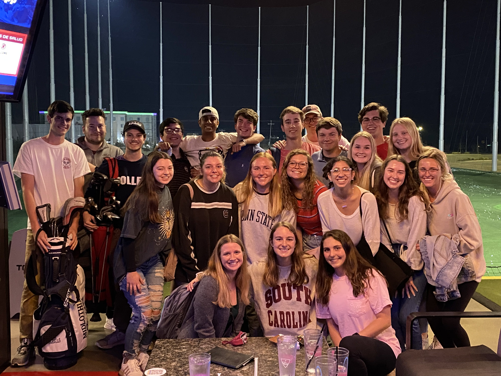
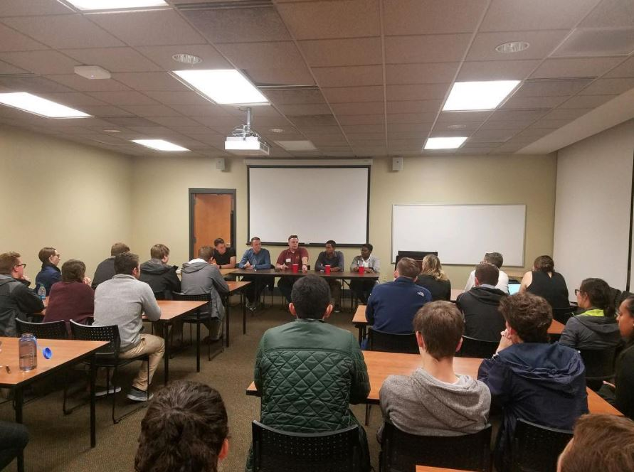
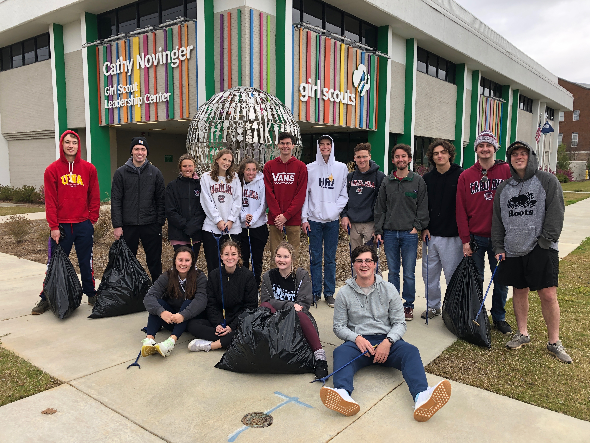
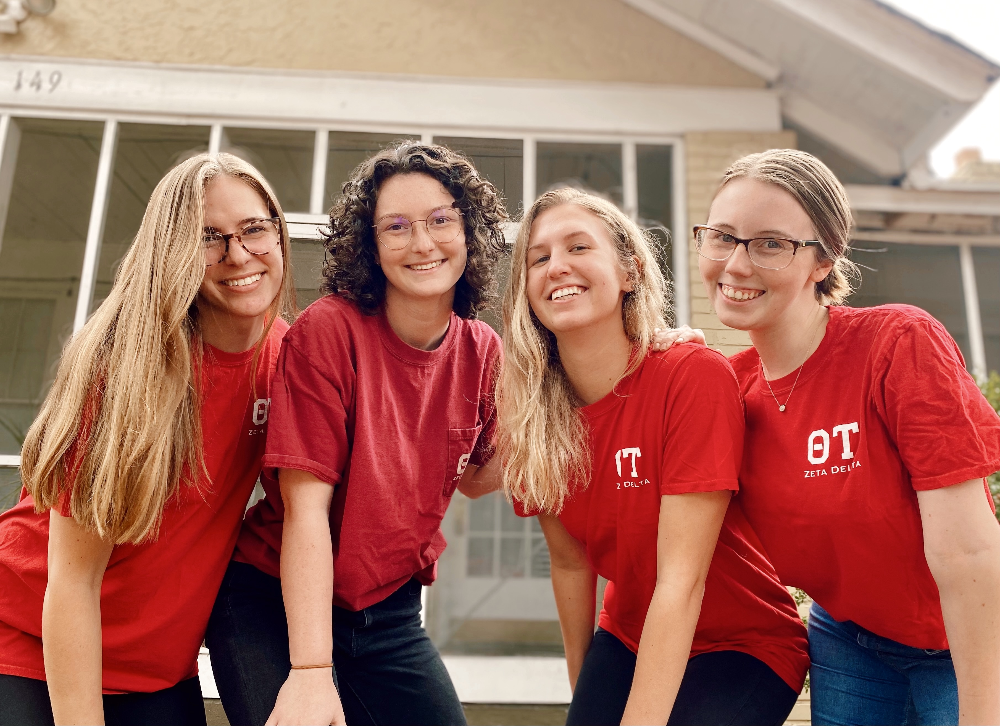
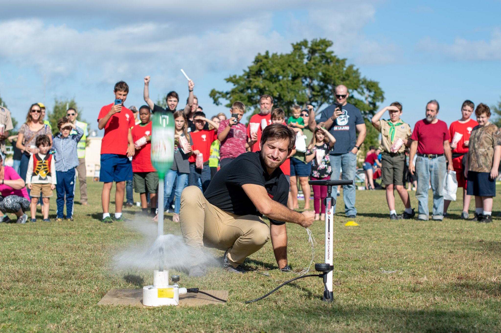
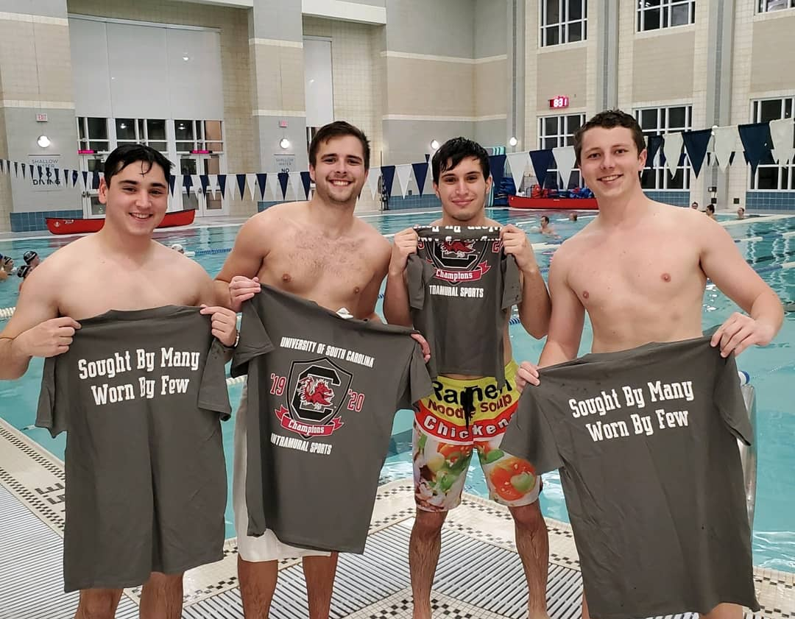
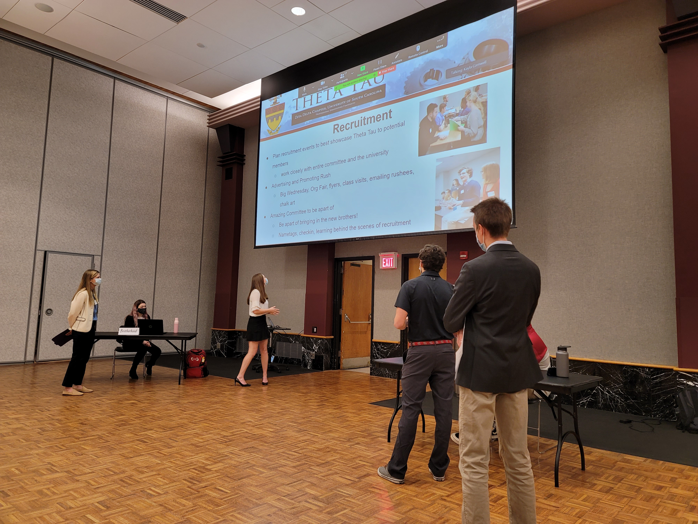
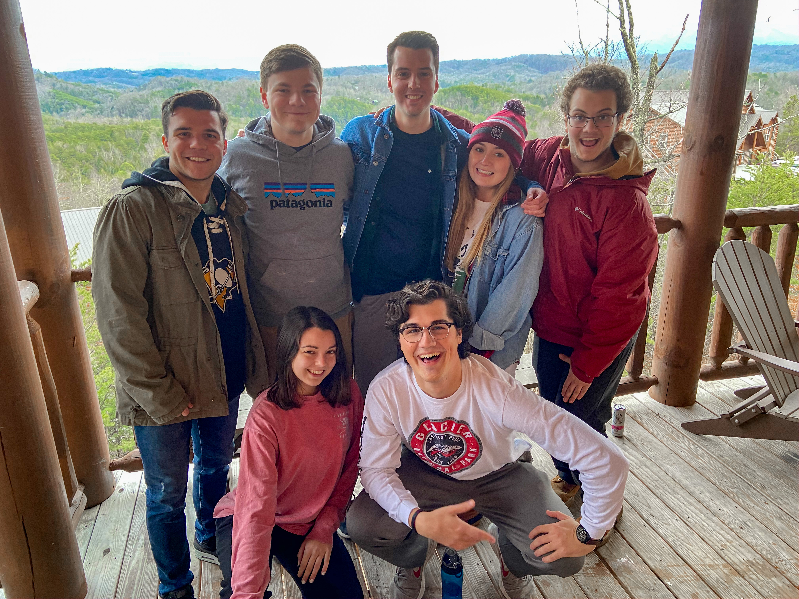

About
Brotherhood
The purpose of the brotherhood committee is to plan weekly brotherhood events in order to strengthen our fraternal bonds and encourage involvement throughout the organization. There are regular events like game nights, tie dye, pumpkin carving, movie nights, watch parties, and bonfires. There are also larger traditional events like Senior Night, Coryoke (Karaoke), and the Lowcountry Boil.

Professional Development
The purpose of the professional development committee is to help brothers improve their professional skills through company and research dinners, alumni experience or older brother experience panels, tong talks (TED talks), presentations in chapter highlighting specific brother’s professional experience, resume workshops, and more. The professional development committee must also host and organize a PD lock-in, be a liaison between the fraternity and the CEC Career Center, and run the Alumni LinkedIn group.

Service
The purpose of the service committee is to plan fun and creative service events. The service chair must keep track of all active brother and pledge’s service hours (8 hours and 3 different events per semester). This committee will also be in charge of community outreach which in the past has entailed organizing brothers to help at local STEM events like Vex robotics competitions, school visits to the university, and tutoring at local schools.

Academic
The purpose of the academic committee is to motivate brothers to do well in their studies by providing resources to help them succeed and rewarding brothers who do well. Academic committee organizes the textbook bank, internal Rate My Professor database, and plans study sessions throughout the semester.

Philanthropy
The purpose of the philanthropy committee is to host and plan one event per semester that spreads STEM to the community and builds on the chapter’s relationship with the community. The fall semester typically hosts the Fall into Science Festival. The festival incorporates many fun fall-themed STEM activities and our annual Pumpkin Chunkin' competition. The spring semester typically hosts the Living Science Museum which transforms Swearingen into a living museum with brothers acting as famous scientists.

Intramural
The purpose of the intramural committee is to register the fraternity’s intramural teams early and manage them throughout the semester by reminding brothers to attend games/matches and collecting the intramural fees from players. Theta Tau registers several intramural teams every semester and has a long tradition of success.

Public Relations
The purpose of the public relations committee is to manage the fraternity’s public image through social media and t-shirts. The committee is also in charge of advertising for different fraternity events across campus and in the community. In the Fall, PR chair organizes the annual Rivalry Week Car Smash. Finally, the committee handles the upkeep of a photo library from brothers.

Technology
The purpose of the technology committee is to manage the email forwarding accounts, private Facebook page, chapter website, and family tree. This chair also can take on various technology projects that benefit the fraternity (e.g. speed dating timer).
Recruitment
The purpose of the recruitment committee is to be the face of the fraternity during rush and plan events to best showcase everything Theta Tau has to offer to potential new members. Typical events include info session, PD workshop, committee fair, game night, service day, speed dating, and professional dinner.

Social
The purpose of the social committee is to plan big social events for the chapter such as beach weekends, mountain weekends, mixers, and semi-formal/formal dances. The social chair must also help plan Senior Night at the end of each semester.

Fundraising
The purpose of the fundraising committee is to host and plan creative fundraising events for the chapter that members and non-members can attend. Money raised by the fundraising committee is used to fund large fraternity purchases and our Philanthropy events.

Tailgate
The purpose of the tailgate committee is to put on the tailgate for every home football game. This involves setting up the grill, tents, tables, and games, cooking food, and packing up after the game.